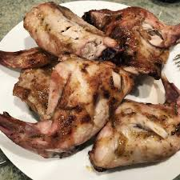

Roast Rabbit

Making garlic and herb roasted Rabbit
Tired of chicken? Try rabbit! Rabbit serves as a low cost white meat alternative to chicken.
This simple recipe will guide you step by step through the process of roasting a rabbit.
Ingredients
- Rabbit
- butter
- salt
- garlic
- chives
- oregano
- parsley
steps
- in a bowl combine butter with minced garlic and herbs
- rub butter mixture around the surface of the rabbit
- Place rabbit in the center of an oven at 300 degrees for two hours
- Every fifteen minutes baste the rabbit with the melted butter and accumulated juices
- For the last fifteen minutes, set the oven to broil to brown the outer surface of the rabbit
- Allow the rabbit to rest for at least ten minutes befoe serving